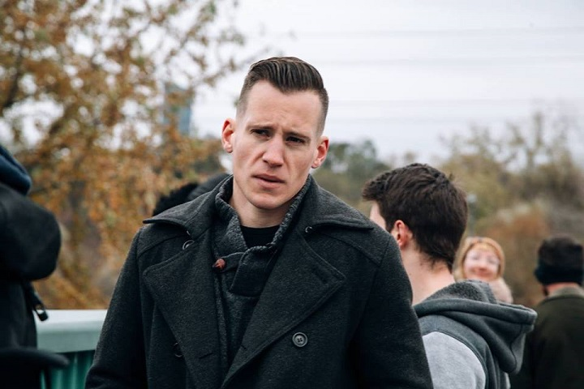
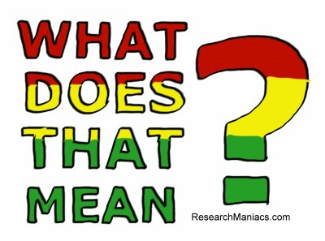
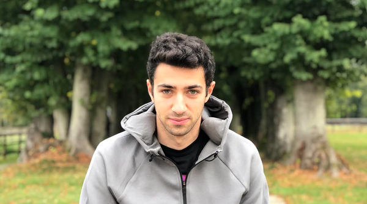
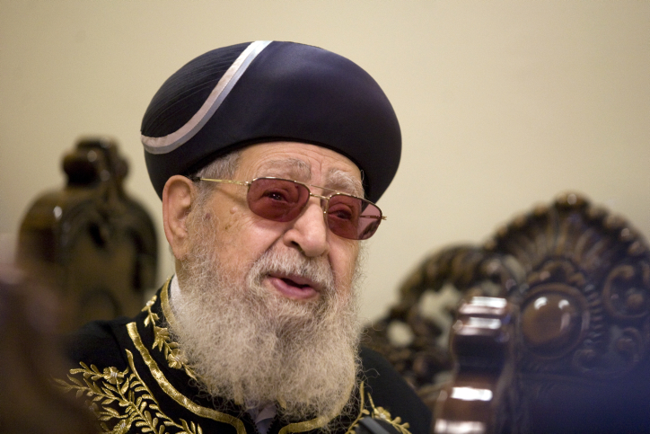

Students for Western Civilization Setting Up at McGill
December 19th, 2020
College Fix:
TDC_ARTICLE_START
A group dubbed “Students for Western Civilization” wants to establish a chapter at Canada’s McGill University in order to “fight anti-white hate speech” and “preserve and enhance [white] cultural heritage.”
But according to CTV News, it is believed the group may be comprised of just one person — George Hutcheson, a 30s-ish gent who’s worked with the country’s “far-right media” and was highlighted recently in a documentary about white nationalism.
TDC_ARTICLE_STOP
George Hutchinson
Alrighty goyim, let me translate that for you. "According to the mass-murder propagandists who lied us into Iraq and Afghanistan because it served the racial interests of jews and the financial interests of Lockheed Martin, the group may be compromised of just one person." Note, "may," as in "may not." As in "may in fact not be comprised of just one person."
It's a tedious job being your propagandist translator, but someone has to do it.
TDC_ARTICLE_START
Hutcheson confirmed the group is seeking official recognition at McGill, but said the Students’ Society of McGill University claimed it hasn’t received the request … “nor is it considering” approval if/when it does.
SSMU spokesperson Brooklyn Frizzle confirmed this: Students for Western Civilization “do[es] not align with the values of the SSMU.”
TDC_ARTICLE_STOP

Brooklyn Frizzle
At first I chuckled, because I thought "Brooklyn Frizzle," was a fake name. But then I recoiled in horror as I looked up this character. Then I laughed when I found the McGill Student Society homepage, where the staff is listed.
Student Society McGill University
TDC_ARTICLE_START
Brooklyn is entering their third year of Microbiology and Immunology - which is extremely applicable to the University Affairs portfolio, for obvious reasons. As Vice-President (University Affairs), they fight for equity and accessibility and are committed to bringing students’ voices back to University decision-making. In this capacity, they sit on a handful of University Committees, including the Senate Steering and Nominating Committees. Their passions include poetry and coming up with creative names for groups and meetings. They ask that you ignore the growing stack of RedBull cans on their desk.
TDC_ARTICLE_STOP

When you can't figure out "him" or "her" so you start with "their"
Anyway, back to the main course.
TDC_ARTICLE_START
In a Monday blog post, the SWC wrote McGill has “many ethnicity-based student groups, but none which defend the special interests of white students.” It said students at Canadian universities are “indoctrinated” with themes such as “all white people are racist,” “only white people can be racist” and that “white societies are necessarily ‘white supremacist’ societies.”
The SWC also warned anyone interested in joining the group that they would be “slandered,” “ostracized” and “attacked.”
TDC_ARTICLE_STOP
Great work by Hutcheson. Make the Anti-Whites own the hypocrisy. Definitely the place to start.
And can I say that Hutcheson keeps a good figure, and is so obviously a genetic cut above the degenerate tranny Xir weirdos slandering him that no normal person can possibly mistake their criticisms of him for anything other than the jealous screeds of spiteful mutants.

Pictured: Faces of Antifa
Sometimes a single picture, or in this case two, says a thousand words. The first picture is our side. The second picture is our enemies. I will say no more.
TDC_ARTICLE_START
In a statement, the McGill administration said the university “fully respects freedom of speech,” but “will remain vigilant to ensure that all members of our community feel safe, welcomed and respected on our campuses.”
TDC_ARTICLE_STOP

Well I think we know what it means. It means the creepiest creeps in creepville are going to try to deny White People the right to organization and speech. This is the hard hitting analysis that you all pay me $0.00 a month for.
From the original CTV Article:
TDC_ARTICLE_START
In an email, Hutcheson claimed that the group picked McGill as the site of a new chapter at students’ requests.
“We chose McGill because we were contacted by five students there who wanted to start a branch,” he wrote.
“So far, we’ve received 11 new applicants, but they haven’t gone through our admission process yet.” …
In its statement to CTV, SSMU said it is very concerned by the idea the group could try to come to campus.
“The Executive Team is approaching this matter with the utmost seriousness and, in the interest of centring [sic] the experiences of People of Colour and not giving a platform to hateful dialogues, we are making every effort to resolve this situation swiftly and quietly,” it wrote.
A New York-based documentary filmmaker who spent time with Hutcheson said that despite the “really silly” appearance of his group to many people, it shouldn’t be underestimated.
“He knows what he’s doing,” said Daniel Lombroso, the director of the documentary “White Noise,” released this summer, about the global rise of the white nationalist movement.
“He’s basically going to use the student group as a way to radicalize college students,” he said.
TDC_ARTICLE_STOP
The Jew Daniel Lombroso
Yes, Daniel Lombroso is a jew, not an Italian, as the name might have caused you to think. While I can't confirm, I'm almost certain he's a Jew Nationalist. This is the hateful ideology that Jews have a right to exclude non-Jews, who some dare call "Goyim," a term that most closely translates into "Cattle," from the Jew Ethnostate of Israel. Jew Nationalists are disgusting, violent people, and we need to have the Government shut down Jew Nationalist Organizations such as the Centre for Israel and Jewish Advocacy, or B'Nai Brith Canada. Here's a quote from a Jew Nationalist, Rabbi Yosef Ovadia, the former Chief Sephardic Rabbi of Israel.
TDC_ARTICLE_START
Goyim were born only to serve us. Without that, they have no place in the world – only to serve the People of Israel. The lives of non-Jews in Israel are safeguarded by divinity, to prevent losses to Jews.
In Israel, death has no dominion over them... With gentiles, it will be like any person – they need to die, but [God] will give them longevity. Why? Imagine that one’s donkey would die, they’d lose their money.
This is his servant... That’s why he gets a long life, to work well for this Jew.
TDC_ARTICLE_STOP
Rabbi Yosef Ovadia, tireless champion against Bigotry
Back to our article.
TDC_ARTICLE_START
Lombroso added Hutcheson’s “militia-like language” appeals to “disaffected” students looking for excuses to blame society for “conspiring against you as a white man.”
TDC_ARTICLE_STOP
Translated from Globo Homo Schlomo to English: "The Jew Daniel Lombroso pretends that White People have vague, poorly thought out critiques of an Anti-White system set up by Jew Supremacists like himself. Tangible policies, such as Racial Discrimination against White People in University Administration, or the banning of White Student Unions, but not other races student unions, will not be mentioned by the Jew Daniel Lombroso, because that would ruin his Anti-White Slander.
Start supporting Israel Goyim."